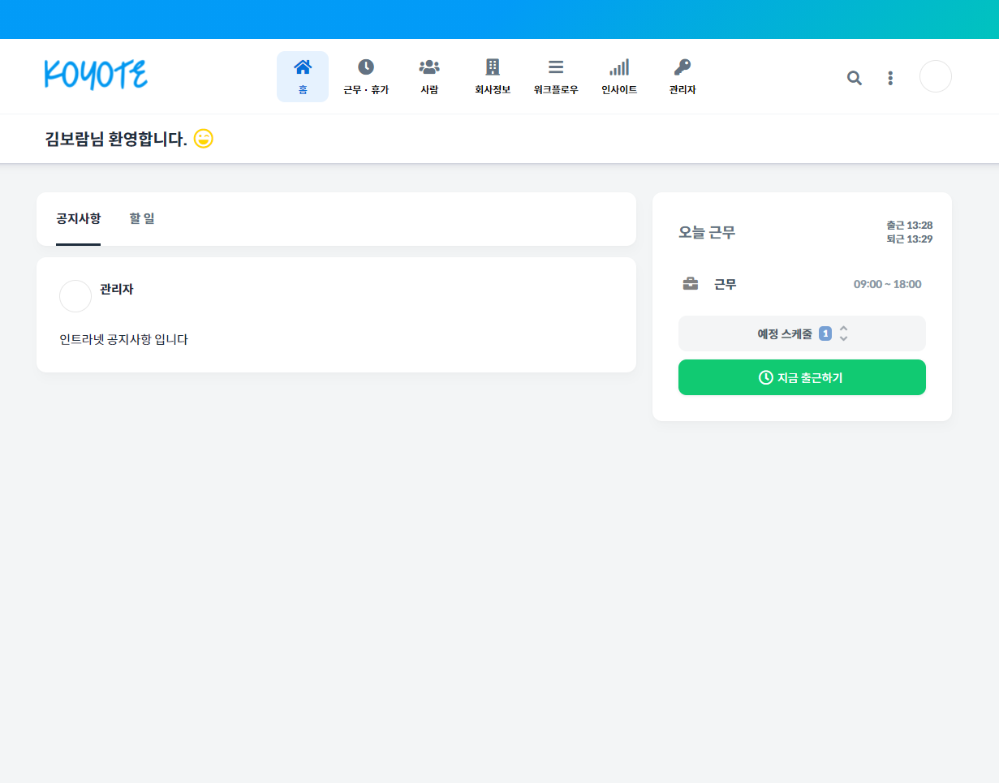

BoRam
Skills
Project
Contact
About Me
줄곧 일했던 경력은 CS 파트였으나, 제가 즐기면서 일할 수 있는 직업을 찾으려 부단히 노력했습니다. 우연히 유튜브 생활코딩을 통해 코딩이란 것을 접했고,
공부를 해보니 정말 많은 노력과 끈기가 필요로 하지만 돌아오는 보람과 성취감이 코딩을 즐기게 된 계기가 되었습니다.
P R O J E C T
Click to view the project!

기술스택
Java / HTML / Ajax / Spring / MyBatis / Oracle / Linux / Apache / jquery /Javascripts
인트라넷 프로젝트 설명
사이트 특성상 깔끔하고 직관적인 진행형식으로
적절한 모달과 팝업 등을 이용하여 사용자의 편리성에 집중했습니다
데이터 통신의 대부분을 ajax를 이용하였으며,
flex
라는 사이트를 참고하여 개발 진행하였습니다.
S K I L L S
java
프로젝트 진행 시 사용 언어로 적절한 함수와
클래스 등을 이해하고 사용할 수 있습니다
spring framework
프로젝트 진행 시 사용한 프레임워크
jsp
스크립틀릿의 이해와 JSTL라이브러리를 사용하여 적절한 태그 사용가능
Ajax
비동기 통신의 개념과 json을 이용한 데이터이동을 정확하게 이해하며,
fetch 함수를 사용해본 경험이 있습니다
javaScript
엘리먼트를 이해하고 있고, 함수를 만들고 사용가능
jquery
기본적인 함수 사용 가능
linux
VMware에 linux 가상서버를 설치하여 데이터베이스를 구축해본 경험이 있다
Oracle SQL
SQLD를 취득하여 기본기를 공부하였으며,
기본적인 join문과 CRUD가 가능합니다
C O N T A C T
Phone
010-8586-2025
Email
boram04415@naver.com